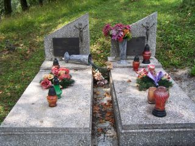

|
| Anastazja Bomba 10.02.1914 - 8.04.1983 |

|
| Józef Hamryszczak 16.04.1866 - 7.07.1938 |
| Katarzyna Hamryszczak |
| Anna Kaczmar |
|  |
|
Bronisława Kettner 6.08.1895 - 1962 Paweł Kettner 31.03.1888 - 1970 |
| Roman Hnatyszak 8.12.1925 - 12.01.1943 |
| Albert Kettner |
|
Anna Kettner 18.04.1923 - 30.04.1997 Edward Kettner 2.02.1922 - 31.03.2002 |
|
Emilia Kotowska 1924 - 1935 |
| Paraskewia Nienadowska |
|
Anna Krupa przeżyła 66 lat |
| Anna Krupa |
|
Maria Krupa przeżyła 18 lat Bazyli Krupa przeżył 56 lat |
|
Mikołaj Krupa 1894 - 1957 |
|
Paulina Krupa 2.05.1882 - 2.01.1951 |
|
Józef Kulhawiec 16.02.1908 - 20.07.1987 |
|
Józef Kulhawiec 12.01.1934 - 26.12.2001 |
|
Helena Łoś 1880 - 1944 Michał Łoś 1876 - 1942 |
|
Michał Łoś 05.1915 - 07.1945 |
|
Bazyli Marcinów 15.05.1900 - 13.03.1992 |
|
Emilia Marcinów 15.01.1900 - 5.04.1978 |
|
Michalina Nienadowska 5.04.1931 - 5.07.1987 |
|
Michalina Nienadowska 3.07.1903 - 12.10.1987 Mikołaj Nienadowski 21.04.1903 - 15.08.1987 |
|
Katarzyna Jakubów 13.08.1901 - 27.12.1991 Michał Jakubów 24.02.1909 - 18.03.1989 |
|
Paweł Wronowski zm. 13.11.1960, przeżył 77 lat |
|
Mikołaj Zachorbeński zm. 24.06.1935, przeżył 21 lat |
|
Informacje zamieszczone na stronie zostały odczytane z zachowanych tabliczek nagrobkowych, część uzupełniono i zmieniono w oparciu o posiadane dokumenty. Z uwagi na zniszczone lub słabo widoczne napisy, niektóre podane dane mogą być niezgodne z faktami. Każdego, kto posiada bliższe informacje na temat wymienionych osób, zauważył jakiś błąd lub nieścisłości prosimy o kontakt. Będziemy wdzięczni również za informacje na temat zmarłych, o których nie posiadamy żadnych informacji, a o miejscu ich pochówku świadczą jedynie zachowane symbole religijne. |